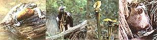

Judy Cobb
LEFT TO RIGHT: Turtles and other reptiles become more active before a storm ...Birds fly lower—or not at all —when the air pressure drops ...Although many plants close their leaves before a downpour , the pitcher plants open wide ...Animals that make their homes near creeks or rivers, such as the otter, can often be seen moving their young to higher ground before the onset of heavy rains.